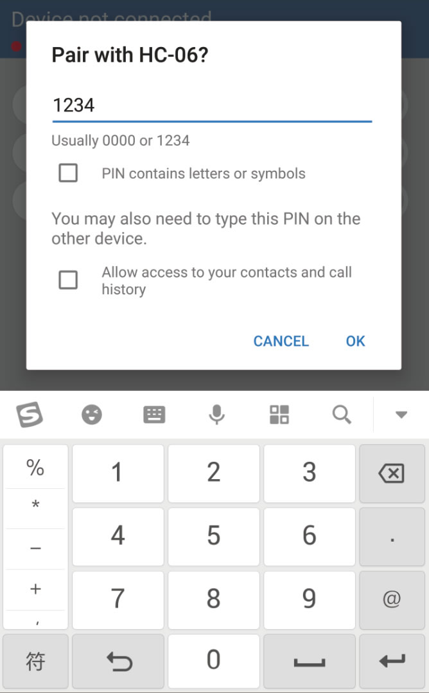
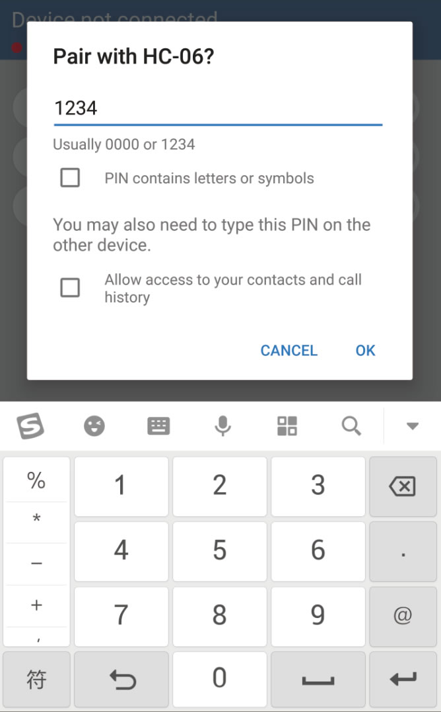

Introduction
BTMCU (Bluetooth controller for MCU) is a Bluetooth-based application for microcontroller control designed for electronic design enthusiasts.Its unique professional control mode has the characteristics of communication customization and control interface customization.
BTMCU's communication function is very powerful, it supports bidirectional transmission of 5 data types (boolean/byte/short/int/float) in professional mode. You can use BTMCU to do anything related to Bluetooth control, such as controlling LEDs, relays, servo motors, stepper motors, DC motors. At the same time, the sensor data can be transmitted back to the mobile phone, such as temperature, humidity, infrared, motor speed, accelerometer and gyroscope.
Features
BTMCU is a powerful application based on the connection between the phone and the Bluetooth device. It has three very useful features:
- Command control
Sending text instructions to the microcontroller and receive the data it returns. - Button control
Sending commands to the microcontroller by pressing buttons. - Professional control
Customizing the packet structure and widgets to achieve higher standard control. If you want to know how it works in professional mode, click here.
Special Note
-This app is only for communication with classic Bluetooth modules. Support for BLE devices is not stable.
-This app requires location information permission to search for nearby Bluetooth devices. I won't collect your location.
-Please pay attention to the process of pairing when using the Bluetooth module for the first time.
How to connect devices
I designed a Bluetooth scanning and connection interface that makes it easy to connect to Bluetooth devices. In addition, I also designed the function to display only devices with a specific name, which you can use to exclude unrelated Bluetooth devices.
Currently, BTMCU only supports the HC-05/HC-06 and JDY series of Bluetooth modules. Since BLE devices communicate with classic Bluetooth devices differently.
Scan

Click the button to start scan.The discovered device will appear in the list above.If you want to stop it, just click the button again.
Pair and Connect
 
Click the "+" button to connect to the device.If you have already paired, you can connect directly. If your phone is not paired with this device, the ‘Pairing’ dialog will pop up in a few seconds.You need to type ‘1234’ or ‘0000’ to complete the pairing.
After pairing for a few seconds, the system will notify you of the result of the match. You can click the '+' button again to connect the device if pairing succeeded.

When the device is connected, the ‘+’ button will change to the ‘X’ button. You can click ‘X’ button to disconnect
Devices Filter


Input a part of the name of target device.

Turn on the switch and scan, you will find that only the target device is visible.
How to play in professional mode
In professional mode, control commands and sensor status are transmitted in the form of data packets. The structure of the data package is shown in the figure above, and the part we need to configure is the original data part. Five types of variables are supported in this application. The number of each variable can be set separately. If you want to control two LED lights, you just need to add two bools to the 'Packet to send'in Communication page .
Packets are sent at specified intervals which can be changed here. Intensively transmitted packets will make the control smoother, but it will increase the burden on the microcontroller. It is also limited by the baud rate of Serial port communication between Bluetooth module and microcontroller.
New Project
In professional mode, you need to create a new project to define your own control interface.The project you created will always be in your phone, and you can create as many projects as your phone's storage space allows.
Set Communication Parameters
Setting communication parameters is very necessary if you want to run your project as you wish.


You can customize the structure of data packets in Communication page. All you need to do is press the '+' button and name the new variable. If you want to change variable's name, click the variable circle to select it and click the rename button.

You need to customize the 'Packet to receive' if you want to receive the sensor data from microcontroller.

You can specify when the phone will send the packet. If you enable the "Send when widget is manipulated" mode, the phone will not send packets if the variables have not been changed. This will greatly reduce the burden of communication.
Edit Widgets
The coolest thing about BTMCU is its widgets editing.To start editing, you need to add a widget.I have designed 10 kinds of widgets so far. You will use these widgets to set variables to control targets.
The 'Link' dialog will appear after you select a widget. This is the necessary step to bind the variable to the widget. You can locate this variable by its direction, type and name.
Then you need to get the special settings configured in next dialog. Special settings vary depending on the type of widget.
After all the settings, the layout of widget can be customized. You can edit the position,size and rotation of selected widget. You can see the layout information of the widget in the lower left corner.
Drag the widget to move it.
Drag the lower right corner of the widget to resize it.
Press the widget then drag in one direction to rotate it.
If you want to change the link or special settings, just click the button above.
Run Project
Make it work with Arduino
I won't show you about the hardware connection. Here is the code that runs on the Arduino to communicate with the BTMCU. You can download it and paste it into your code.
It takes only four steps to implement your own control system on the microcontroller.
1.Define numbers of variables in packets.
2.Initialize with the serialport and baudrate.
3.recvPack() and read value by 'value = rxPack.*' ('*' is bools[n]/bytes[n]/shorts[n]/integers[n]/floats[n])
4.Write value by 'txPack.* = value' and sendPack() ('*' is bools[n]/bytes[n]/shorts[n]/integers[n]/floats[n])
How to play in command mode
Send and Receive
Line Breaks Replacement
When you press the Enter key on the input method keyboard, you actually send the '\n' character. However, '\r \n' is required for many occasions, for which I added the line breaks replacement feature.
Top/Bottom/Clear
Three convenient buttons for browsing data records.
How to play in button mode
Press and Release
There are 11 customizable buttons in this app. For each button, two different sets of data can be sent based on the event. You can set the corresponding data to be sent when the button is pressed and released.
Editing Mode
You can turn edit mode on and off by clicking the switch at the bottom right. When you click the button in editing mode, the dialog of button settings will pop up.
Edit Buttons
And... I need your help
Hello everyone. I'm xlazydog, I love electronic design. I wrote this app for bluetooth control, and I hope that people will liberate their time and make something cooler by using my app.
It's not easy to write a whole set of programs and promote them. I am a person who has no job and lacks funds. Donate me, let me have the confidence to do it. You can also support me by trying other apps I just developed. I would be very grateful if you took the time to rate my apps!!!
Thanks.